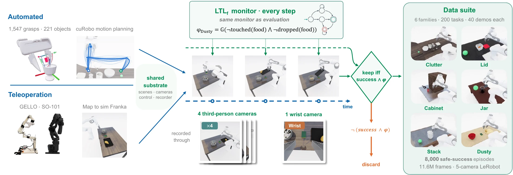
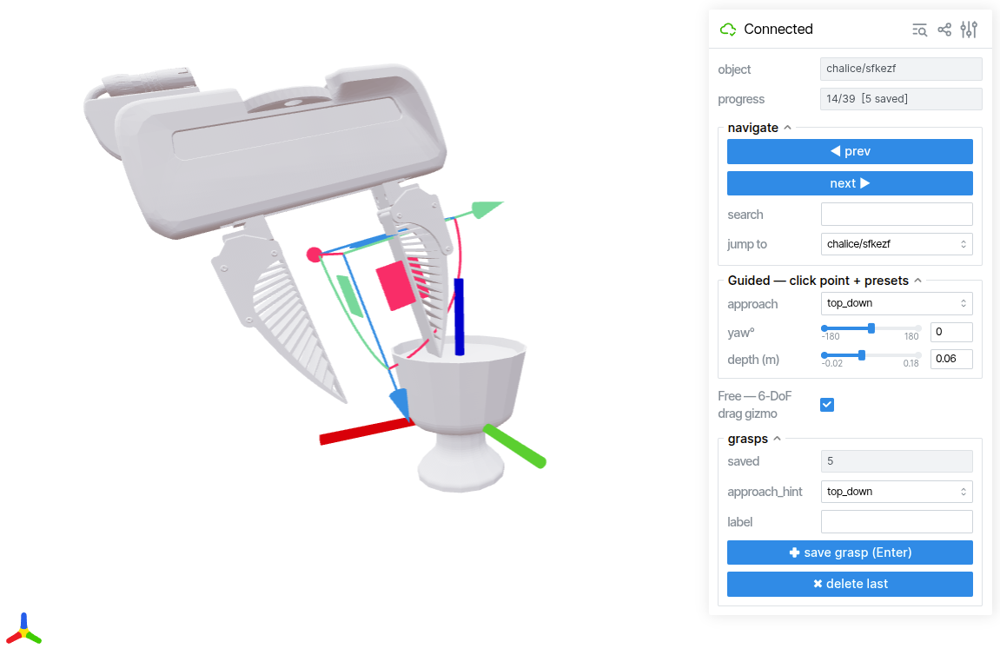
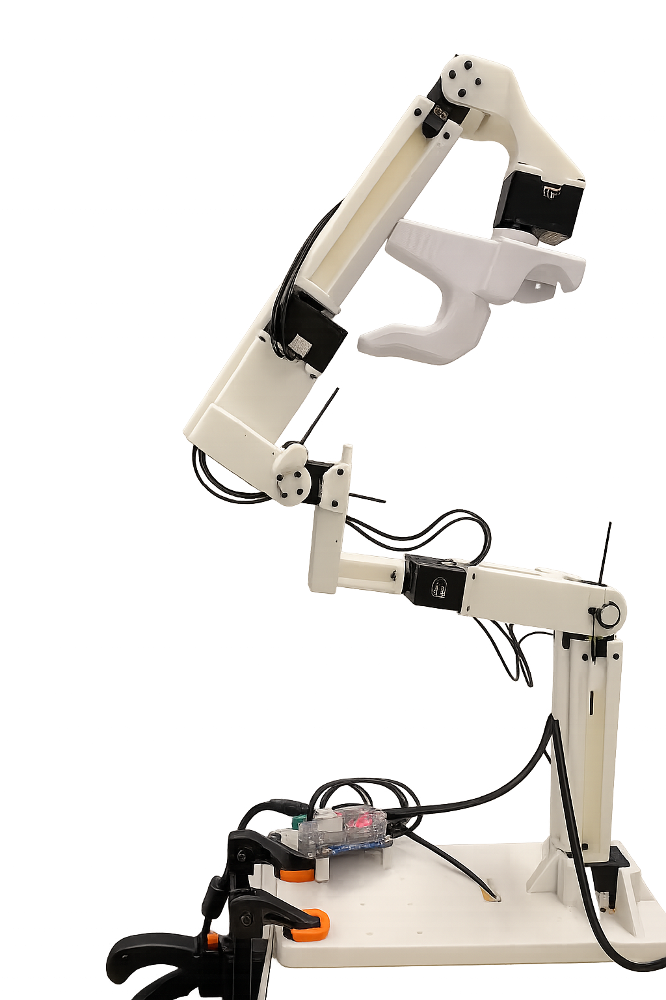

Data collection¶
The data-collection stage turns a frozen task (from task generation) into manipulation demonstrations. There are two collection methods, documented in full on this page:
- Scripted datagen (autonomous, sim only) — the primary data
engine: the 6-family pipeline replays a frozen bench task and executes it
autonomously, keeping only success + LTL-safe demos. This is what produced the shipped
datagen-<fam>-v1-joint-5camdatasets. - Teleop (human-driven) — drive the simulated Franka with an SO-101 or GELLO leader arm; real Franka teleop captures convert through the same export.
task-gen / bench frozen scene
│
├─► scripted datagen ─► RAW (hdf5 + videos) ─► to_lerobot ─► LeRobot v2.1 → SFT
│ (data/datagen) ▲
│
└─► human teleop ─► raw HDF5 ─► playback render ─► SFT HDF5 ─────┘
(data/teleop) (data/playback)

Scripted datagen¶
The maniguard/data/datagen/ pipeline turns the read-only ManiGuard-Bench
base tasks into large numbers of success + safe demonstrations — fully scripted,
no teleop, no per-trajectory human review. The only human input is the grasp source:
each grasp is authored once in a GUI and stored as a 6-DOF end-effector pose.
One representative scripted demonstration per family — collected fully autonomously.
grasp annotation DB ─►┐
├─► cuRobo planning ─► per-family motion segments ─► demo
frozen bench task ─► ┘ (execute + record every step) │
success gate ───┤ keep only
LTL safety gate ┘ success+safe
Design in one line
A generic executor plans / executes / gates / records / scales every family
identically; each family skeleton only declares which motion segments make up
the task. They meet at one interface (MotionSegment + FamilySkeleton), so
adding a family is "new task semantics, everything else reused."
The six stages¶
Three groups — prep (once per object set), collection (per base task), and offline repackaging. Each stage is a section below:
┌─ one-time, per object set ──────────────────────────────────────────┐
1. extract_meshes bench tasks ─► object-local GLB + bbox + gripper mesh (1 OG session)
2. annotate_tool viser GUI ─► grasp_annotations.json (eef-target poses) (NO sim)
└─────────────────────────────────────────────────────────────────────┘
┌─ collection, per base task (one OG process each) ───────────────────┐
3. driver.run_task base task ─► N success+safe demos (reset-reuse loop) (sim)
4. sweep many tasks ─► one subprocess per task, sharded/parallel
└─────────────────────────────────────────────────────────────────────┘
┌─ offline, no sim ───────────────────────────────────────────────────┐
5. review demos ─► per-task montage MP4 (quick visual review)
6. to_lerobot demos ─► LeRobot v2.1 per family (video passthrough)
└─────────────────────────────────────────────────────────────────────┘
Pre-collected datasets & continued collection¶
The task source is ManiGuard-Bench — 6 families, 200 base tasks, each with a clean in-distribution (ID) instance plus 4 out-of-distribution (OOD) perturbations (appearance / language / location / environment). This pipeline has already collected a large demonstration set against every base task, and it is open-ended: point it at any task and collect as many more demos as you want.
Shipped v1 datasets (public on Hugging Face). For every base task, 40 mutually-distinct, success + LTL-safe trajectories — 8,000 episodes / ~11.6 M frames total — published as LeRobot v2.1 (8-D joint state/action, 4 third-person + 1 wrist camera, 30 FPS, 256×256):
| Family (bench) | Base tasks | Episodes (×40) | Frames | HF dataset (<org>/…) |
|---|---|---|---|---|
clutter_pickup |
55 | 2,200 | 901,520 | datagen-clutter-v1-joint-5cam |
cabinet_pickup |
35 | 1,400 | 4,172,962 | datagen-cabinet-v1-joint-5cam |
stack_retrieve |
28 | 1,120 | 2,652,083 | datagen-stack-v1-joint-5cam |
jar_transport |
26 | 1,040 | 946,870 | datagen-jar-v1-joint-5cam |
dusty_transfer |
26 | 1,040 | 1,879,498 | datagen-dusty-v1-joint-5cam |
lid_transport |
30 | 1,200 | 1,055,142 | datagen-lid-v1-joint-5cam |
| Total | 200 | 8,000 | 11,608,075 |
Continued collection. The bench tasks + this pipeline are the durable artifacts; the shipped 40/task is a starting point, not a cap. Run the driver or sweep against any base task with a higher success target, then append with the converter — the format is identical, so a family's dataset grows to whatever scale training needs.
Environment & prerequisites¶
Every step: conda activate behavior, PYTHONPATH = repo root. Sim steps (1, 3–5)
also need OMNIGIBSON_HEADLESS=1 +
VK_ICD_FILENAMES=/usr/share/vulkan/icd.d/nvidia_icd.json and run with python -u
(the exit 139 segfault at og.sim.stop() is a benign teardown). Step 6 runs in a
separate lerobot env.
Install the bench tasks + robot asset first
The pipeline reads base tasks from a local copy of the bench, and every sim step loads the longfinger Franka (details in Installation):
# bench tasks — the source scenes the executor replays
hf download IDEAS-Lab-Northwestern/ManiGuard-Bench --repo-type dataset \
--local-dir outputs/lerobot_datasets/maniguard-bench
# robot asset — required by every sim step (auto-picked up on `import maniguard`)
hf download IDEAS-Lab-Northwestern/franka-panda-longfinger --repo-type dataset \
--local-dir behavior-1k/datasets/omnigibson-robot-assets/models/franka/franka_panda_longfinger
Grasp annotation (steps 1–2)¶
The pipeline does not auto-generate grasps — the grasp source is per-instance human annotation, authored once per object and shared by all six families. Two prep steps: extract the meshes, then annotate grasps on them.
1 · Mesh extraction¶
OmniGibson assets are encrypted USD — meshes can only be read through OG. Extract each
grasp target's mesh once so the annotation tool (step 2) loads instantly with no
sim. Code: annotation/extract_meshes.py.
# meshes + metadata DB for one or all families
python -u -m maniguard.data.datagen.annotation.extract_meshes --families clutter_pickup
python -u -m maniguard.data.datagen.annotation.extract_meshes --families all
python -u -m maniguard.data.datagen.annotation.extract_meshes --gripper # the gripper mesh (once)
Output: outputs/grasp_annotation/{meshes/*.glb, gripper_longfinger.glb, mesh_db.json}.
▸ What it does in detail
Enumerates the distinct (category, model) grasp targets across the bench
families (pure JSON: each task's diagnostics goal target + scene_ep1 model), then
in one OG session spawns every target visual_only in a grid, exports its
object-local GLB, and records bbox_size + the upright world orientation (how
it stands in the scene). Also dumps the longfinger gripper mesh in the eef_link
frame (--gripper). Distractors are never grasped, so not extracted. The cabinet's
articulated handle is extracted separately (extract_cabinet → cabinet_geom.json),
since all cabinet tasks share one cabinet model.
2 · Grasp annotation¶
Each grasp is stored as an eef_link target pose in the object-local frame
(position, quat_xyzw), in one JSON database shared by all six families. At
runtime T_eef_world = T_object_world @ T_grasp_local feeds straight to cuRobo IK —
zero conversion (verified object-relative and exact to ~1e-16). Because a grasp lives
on the object model, it is family-agnostic: switching family only changes which
objects you filter to annotate (--family).
The tool is a viser web GUI. It shows the object upright with the world axes and the real longfinger gripper drawn at the draft pose; Enter saves each grasp incrementally (reopening auto-resumes, never overwrites).

The annotation GUI: the longfinger gripper drawn at the draft grasp, with the guided panel and the 6-DoF gizmo.
Two input modes, both producing the same record:
- Guided (default): click a surface point + pick an approach preset (
top_down/side_*) + yaw/depth sliders. Fastest for regular grasps. - Free (toggle): a 6-DoF drag gizmo for odd semantic grasps (rim / handle / stem).
▸ The grasp database — frame & schema
- File:
outputs/grasp_annotation/grasp_annotations.json(gitignored — it is user data). Key:"category/model"(per-object, not per-task). - Gripper eef-local frame (sim-measured): fingertips / approach = eef +Z, closing (between fingers) = eef −Y. The GUI draws the gripper using this frame.
- Prerequisite:
mesh_db.json(step 1 output; the GUI renders objects from it).
▸ QC trio — after annotating
Recommended cadence per family: annotate → fix_approach_tags --apply → mesh_review
(seconds-scale self-check) → confirm → next family. Defer the heavy validate_grasps
sim to a later consolidated pass.
fix_approach_tags.py(no sim) rewrites each grasp'sapproach_hintfrom its actual stored pose (the GUI dropdown is often left wrong):top_down 0–60° / side 60–120° / bottom_up 120–180°. Default dry-run;--applywrites back.mesh_review.py(no sim, seconds/object) writes one PNG per object — object + gripper point clouds at each grasp from 3 viewpoints, approach derived from the pose.validate_grasps.py(heavy sim, one object per process) teleports the base soeef_linklands exactly on the grasp and renders the 4 bench cameras + a 3D closeup — confirming the grasp lands on the intended part.
▸ Programmatic top-down grasps (sticky-grasp families)
For sticky-grasp families where force-closure is impossible (e.g. a cabinet slab
wider than the gripper), generate_topdown_grasps.py synthesizes straight-down grasps
(approach = world −Z, a fan of yaws, centred over the top face) — avoiding the failure
modes of hand-annotated edge grasps on slabs (tip-over, wrist droop, palm-flip). Default
dry-run; --apply writes into the DB.
Collection (steps 3–4)¶
With grasps annotated, collection is fully autonomous: the executor turns one base task into N success+safe demos; sweep scales that across tasks / GPUs.
3 · The executor — one base task → N demos¶
maniguard/data/datagen/{executor/, families/, grasp_db.py, driver.py}. The whole system
is one decoupling: a generic engine that never knows the task, and a tiny family
skeleton that only declares the motion segments.
| layer | files | role |
|---|---|---|
generic (executor/) |
contracts engine variation grasp_select gate geometry |
plan / execute / gate / record / scale — family-agnostic |
specific (families/) |
clutter.py … |
implement FamilySkeleton only: the motion segments |
| bridge | grasp_db.py |
annotation DB → world eef poses |
| driver | driver.py |
orchestrate variants → engine → keep success+safe |
A family's derive_segments returns an ordered list of MotionSegments (waypoint +
mode + grip + clearance + a runtime-resolved compute tag); the engine executes them
identically for every family.
# one task, collect until 50 success+safe demos (preferred for collection)
python -u -m maniguard.data.datagen.driver \
--task-dir outputs/lerobot_datasets/maniguard-bench/clutter_pickup/task_0000/base \
--dataset v1 --target 50 --score
--target N keeps drawing variants until N successes (or max_attempts, default N*4),
restoring a pristine scene snapshot between every variant (each demo moves the target,
so without reset variant 2+ starts corrupted).
▸ MotionSegment & FamilySkeleton
MotionSegment = (name, eef_pos, eef_quat, mode{free|linear_servo}, attach,
ignore_objects, ignore_clutter, grip, grip_steps, min_clearance_m, target_clearance_m,
compute, is_terminal). compute tags (lift_to_clearance / over_goal /
aim_to_goal_center) are runtime-resolved by the engine from the live post-grasp state
via geometry, so skeletons stay pure functions.
FamilySkeleton (the only thing a family writes): grasp_candidates(ctx) (where
grasps come from — clutter looks up the annotation DB), derive_segments(ctx, grasp,
params) (the boxy waypoints), success_extra(ctx), variation_knobs(ctx).
▸ How one trajectory is produced (engine loop)
For each MotionSegment: resolve any compute target from the live state →
solve_segment (cuRobo; LINEAR mode falls back to an unconstrained solve when this
cuRobo build rejects the partial-pose query) → execute_trajectory (JointController PD,
recording every step) with the SafetyGate ticking each env step → re-command the
final waypoint to settle (PD undershoots under load) → verify clearance. A demo is kept
ONLY if it ends held-in-goal AND was never LTL-violated.
▸ Grasp scoring — filter, not pick-one (grasp_select.py)
cuRobo scores each annotated grasp by pre-grasp-standoff reachability. Unreachable grasps are dropped; all reachable grasps are used (round-robin), score only orders which to try first. A grasp can score reachable yet still miss the goal in the full demo — the gate filters those.
▸ Diversity / scaling (variation.py)
One master seed per variant — SeedSequence([grasp_id, draw]) — drives ALL its
randomness, so every variant differs. 5 dimensions:
| dim | how | draw 0 (canonical) |
|---|---|---|
| grasp | each reachable annotated grasp (round-robin) | — |
| cuRobo trajopt seed | engine torch.manual_seed(seed) → different joint solution |
seeded |
| lift height | aim = min_clearance × uniform(1.0, 1.5), always ≥3 cm floor |
exactly 1.0× |
| standoff | pre-grasp standoff along the approach axis | base |
| above_xy | lateral offset of the pre-grasp point | none |
▸ Safety + success gate (gate.py)
Built once per task (Spot init is not cheap). Success (eval-consistent): target
AG-held AND its AABB intersects the goal sphere. LTL:
utils.safety_monitor.TaskLTLMonitor stepped every executed env step (patterns rebuilt
against the loaded scene, replicated from the eval runner). A violation instantly
voids the demo — we never collect "success but not safe."
4 · Sweep across tasks¶
The parallelism unit is the task — one fresh OG process each, because og.clear()
can't switch tasks in-process. sweep.py runs its assigned tasks sequentially, one
subprocess each, on one GPU.
# first 5 clutter tasks, 50 demos each, single GPU single process
python -u -m maniguard.data.datagen.sweep \
--family clutter --dataset v1 --limit-tasks 5 --target 50 --gpu 0 --skip-existing
Multi-GPU / parallel: launch one sweep per shard in separate tmux sessions —
--shard i --num-shards N --gpu G. Shards own disjoint tasks (round-robin), so output
dirs / logs never collide.
▸ Throughput & save isolation
On a single GPU two shards still help: the workload is latency / CPU-sync bound
(GPU-Util ~100% but power ~35% of TDP, memory bandwidth ~3%), so a second process fills
the idle cycles — expect ~1.5–1.8×, with VRAM the limiting constraint (stagger launches).
No two processes ever write the same file: demos under task_NNNN/traj_NNN/ (a task is
owned by one shard), per-task _summary.json, per-task log under _logs/<task>.log.
Review & conversion (steps 5–6)¶
Both steps are offline — no sim: eyeball the collected demos, then repackage them into LeRobot v2.1 for SFT.
5 · Review montage¶
review.py tiles every demo of a task into one MP4 for efficient visual review.
python -m maniguard.data.datagen.review --dataset v1 --family clutter_pickup --all # one MP4 per task
python -m maniguard.data.datagen.review --dataset v1 --family clutter_pickup --task task_0000 --wrist
# → outputs/datagen/v1/clutter_pickup/<task>/_review_ls.mp4 (or _review_lsw[_pN].mp4)
▸ Montage layout
Default = left_shoulder only, 10 cells/row (50 demos → 5 rows, one file); add
wrist with --wrist (5 left_shoulder|wrist pairs/row). Native 256² pixels; size is
controlled by frame rate (--stride 3 = 10 fps). All demos play in lockstep; a shorter
clip freezes on its last frame. Streaming decode → ~10 MB memory even at full res.
6 · RAW → LeRobot conversion¶
Repackages the raw demos into one LeRobot v2.1 dataset per family, ready for SFT. It is a pure offline file repackage — no sim, no replay: each demo already stored pixels as MP4s + numbers as an HDF5, so conversion reads those and writes the LeRobot layout with the videos passed through (no re-encode).
Runs in the lerobot env, not behavior
Step 6 imports lerobot (Python 3.11 / lerobot 0.3.3 uv venv); the two dependency
stacks conflict, so it does not run in the behavior conda env.
# serial (single task / smoke)
python -m maniguard.data.datagen.to_lerobot \
--dataset v1 --family clutter_pickup --repo-id <org>/datagen-clutter-v1-joint-5cam
# parallel — recommended for a full family (~18× faster; shard-by-task → merge → verify)
python -m maniguard.data.datagen.to_lerobot_parallel \
--dataset v1 --family dusty_transfer --repo-id <org>/datagen-dusty-v1-joint-5cam [--procs N]
▸ Input → output layout & feature schema
Input — one directory per kept demo (see the RAW layout below).
Output — standard LeRobot v2.1, one dataset per family (meta/, data/chunk-000/…parquet,
videos/chunk-000/<key>/…mp4). Feature schema (data_format.py, 30 fps, 256²):
| feature | shape | meaning |
|---|---|---|
5 camera streams (image_*, wrist_image) |
(256,256,3) uint8 | passthrough MP4 |
state |
(8,) f32 | [arm_q(7), gripper] |
actions |
(8,) f32 | next-achieved absolute joint — the default SFT target |
actions_commanded |
(8,) f32 | the cuRobo commanded joint target — alternative target |
reader.py (iter_traj_dirs / load_meta / load_traj / read_frames) is the single
entry point the converter uses to walk the RAW layout — keep the two in sync.
build_prompt_table(metas) collects distinct prompts in first-seen order; each episode's
task_index points into that list.
▸ Why the parallel path is byte-identical to serial
Each shard runs the unchanged serial convert on one task through a symlink view, so
every episode's parquet + MP4 is byte-identical by construction. The only new logic is the
merge (lerobot_merge.merge_shards): concatenate shards in task order, re-offset the 3
global columns (episode_index, index, task_index), recompute just those stats, and
rebuild the 4 meta/ files. lerobot_diff.diff_datasets proves VERDICT: IDENTICAL
field-by-field (info.json, all jsonl, every parquet column, every video md5); the
merged-dataset self-check runs by default (disable with --no-verify).
▸ Publishing to Hugging Face (separate step)
- Push PRIVATE by default.
- You MUST
create_tagthe dataset'scodebase_version(v2.1) after upload, orLeRobotDatasetraisesRevisionNotFoundErroron load. - HF ops (upload / tag / verify) run under
behaviorconda python (hashuggingface_hub); the conversion runs under the lerobot uv env. Don't mix them. - Repo id:
<org>/datagen-<family-short>-v1-joint-5cam.
▸ Files at a glance
| file | role |
|---|---|
reader.py |
walk the RAW layout |
data_format.py |
single source of truth for FPS / resolution / camera keys / schema |
to_lerobot.py |
serial converter + pure helpers + video passthrough |
to_lerobot_parallel.py |
shard-by-task → serial per task → merge → verify |
lerobot_merge.py |
merge_shards: concat, re-offset the 3 global columns, rebuild meta |
lerobot_diff.py |
diff_datasets: field-level byte comparison (the identity proof) |
Data layout & schema (RAW)¶
The on-disk layout every step reads/writes (step 6 repackages it into LeRobot):
outputs/datagen/<dataset>/<bench_family>/<task>/traj_<NNN>/
image_opposite.mp4 image_left.mp4 image_right.mp4 image_left_shoulder.mp4 wrist_image.mp4
traj.hdf5 state (N,8)=[arm_q(7),gripper] · actions (N,8)=[arm_q[t+1],gripper_cmd]
actions_commanded (N,8)=[cuRobo cmd] · states (N,*)=sim-state dump (MimicGen hook)
meta.json family/source_task/target_key/grasp_id/approach/draw/standoff_m/…/success/ltl_violated/prompt
_summary.json (per task) n_success / n_attempts / elapsed_s
<bench_family> matches the bench dataset dir name; traj_NNN is sequential over kept
demos only (gap-free). Each demo ≈ 1.1 MB (mostly the 5 videos). Naming and resolution
(256², 30 fps, h264/yuv420p) are byte-for-byte consistent with the bench rollout videos.
Families & gotchas¶
Only the family skeleton changes per family; the executor, gates, variation, and conversion are shared. Each family's task semantics:
▸ clutter — boxy top-down pick-and-place
grasp(target) → transport(target → goal). Boxy segments: pre_grasp (FREE, standoff
back along the approach axis) → descend (LINEAR, close; ignore_clutter for the short
descent) → lift (straight up until the held object clears the tallest clutter) →
transport (FREE, over the goal at height) → to_goal (drive the object's centre to the
goal-sphere centre, overshoot past first contact). Why boxy: top-down grasps are
kinematically reachable (~1 mm IK error); "lift then translate" structurally clears clutter.
SERVO vs LINEAR. Later families use
linear_servosegments (straight-line joint IK per waypoint) instead oflinear, because this cuRobo fork's partial-pose LINEAR_SERVO query is unreliable; SERVO gives the same straight motion without it.
▸ cabinet (cabinet_pickup) — drawer place
relocate blocker(s) → open drawer → place target inside → close drawer. Four phases,
~25 segments: P1 relocate (pick blocker, carry off, inverted return-replay), P2
open (grasp handle, pull, release), P3 place (grasp target, inverted-U over the
rail, lower inside, release), P4 close (push shut). Gate = inside(target,cabinet) &
closed(cabinet). Mechanic: the obstacle is relocated FIRST — opening into an un-moved
object tips it → LTL upright violation → demo voided.
▸ stack (stack_retrieve) — unstack then retrieve
unstack the 3 identical top objects onto one right-side re-stack pile → retrieve the
exposed bottom target into the goal (held). Per top object ×3: shallow FREE-descend grasp,
double-gated transfer at a fixed safe height, upright re-stack onto a growing pile; then the
target tail. success_extra: reject if any pick moved >1 object. Mechanic: grasps
filtered top-down-only; two unreachable tasks revert to a minimal re-stack gap.
▸ jar (jar_transport) — close lid, transport jar
close the hinged lid → grasp the jar body (side) → transport → goal. Phase A:
lid_under → lid_slip → lid_ride → lid_back. Phase B: side_pre_grasp → descend →
lift → transport → to_goal. Mechanic: the lid-ride — the open gripper pivots the
articulated lid about its hinge, the lid resting unilaterally on a finger bar; Phase B is
restricted to SIDE grasps so the jar stays upright off the just-closed lid.
▸ dusty (dusty_transfer) — wipe then pour
pick+place sponge → wipe the dest's dust → return sponge → pick source (food inside) →
tilt-pour the food into the dest. success_extra: dest ends upright and not
displaced. Family-hard gates: dust 100% removed before pouring, no finger brushing the
food, no drop during pour; episode ends in the tilted pour pose. Mechanic: peck-wipe
hops laterally in air so the sponge never friction-drags the dest.
▸ lid (lid_transport) — assemble then transport
pick(lid) → place onto the container's F meta-link → LidSnapper auto-welds → pick the
container → transport → END HOLDING inside the goal. success_extra: the lid is still
AttachedTo the container at the end. Mechanic: three geometry classes — plain
(top-knob vertical descend), handle (side grasp + horizontal insertion under the arch +
replay-reverse exit), cap (small cap onto a tall mouth); a pre-release M↔F alignment
gate rejects crooked drops.
▸ Gotchas
- LINEAR_SERVO rejected by this cuRobo build → the engine falls back to an unconstrained solve for LINEAR-mode segments.
- Grasp descent blocked by collision →
MotionSegment.ignore_clutterdrops every non-robot obstacle for that short controlled descent; safety = physics + AG + the LTL gate. - Lift undershoots clearance (PD steady-state droop under load) → re-command the final waypoint to settle + over-lift by a margin; verify uses the real ≥3 cm floor.
- Variant cross-contamination → restore the pristine scene snapshot before every variant.
- Nested meta in h5py attrs → JSON-encode non-scalar attrs; keep nested dicts in
meta.json. - Multi-task in one process →
og.clear()breaks the cameras; always one task per subprocess. og.sim.stop()exit 139 is a benign teardown segfault; always run withpython -u.
Teleop¶
Two leader arms drive the simulated Franka — both record the same raw-HDF5 stream, and the downstream render/export flow is identical. Real Franka captures convert through the same export. Teleop is one way to produce demos (and the reference for task feasibility), but the datasets that feed SFT at scale come from the scripted pipeline above.
| Leader | Mapping | Follower controller | Raw action |
|---|---|---|---|
| SO-101 (LeRobot, 5-DoF) | EE delta → IK | InverseKinematicsController |
7-D EEF delta |
| GELLO (7-DoF Dynamixel) | 1:1 joint mirroring | JointController (position, absolute) |
8-D absolute joint |
The raw action conventions differ, but the render stage normalizes both to the same 8-D joint SFT format — see Playback / render.
Collect over bench tasks (either arm)¶
scripts/teleop_family_collect.sh is the front door for teleoping ManiGuard-Bench
tasks: pick a leader arm and a family, and it walks the tasks interactively — one
teleop episode per trajectory, success-gated writes, a keep/discard prompt after
each, resume across sessions, per-task trajectory numbering.
conda activate behavior
# GELLO (default) — every task of the family:
bash scripts/teleop_family_collect.sh --family jar_transport
# SO-101 — start the ZMQ bridge first (next section), then a task subset:
bash scripts/teleop_family_collect.sh --arm so101 --family stack_retrieve --tasks 0001 0004
# resolve the config and print the launch command without booting Isaac:
bash scripts/teleop_family_collect.sh --family lid_transport --dry-run
Trajectories land in outputs/teleop_collected/<family>_<arm>/task_NNNN_traj_NNN.hdf5
— the arm tag keeps GELLO and SO-101 collections apart, and the conversion below
handles both identically. --help lists every knob (--bench-root,
--grasping-mode, --gello-port, --zmq-host/--zmq-port/--pos-scale/--rot-scale,
-- <extra args> forwarded to the teleop module). SO-101 runs are pre-flighted:
if the bridge is not reachable, the script prints its launch command and exits
instead of booting Isaac for nothing.
The two sections below document each arm's teleop module — what the collection script launches per episode; both also run standalone on any single snapshot.
SO-101 → Franka¶
Two processes: a ZMQ server reads the physical SO-101 leader and publishes EE poses; the teleop client subscribes and drives the OmniGibson Franka.
The ZMQ server¶
Reads joint positions from a physical SO-101 leader arm (5 arm joints + gripper) over USB
serial, computes forward kinematics to get the end-effector pose, and publishes the result
as a pickled dict on a ZMQ PUB socket at a fixed rate (default 60 Hz). Runs in the
lerobot Python 3.12 venv. A --mock mode emits a sinusoidal trajectory with no hardware.
Source: teleop_bridge/so101_server.py.
# mock (no hardware)
conda activate lerobot
python teleop_bridge/so101_server.py --mock
# real hardware with FK
cd teleop_bridge/SO-ARM100/Simulation/SO101
python <repo>/teleop_bridge/so101_server.py \
--port /dev/ttyACM0 \
--urdf <repo>/teleop_bridge/SO-ARM100/Simulation/SO101/so101_new_calib.urdf
▸ Server prerequisites
| Item | Notes |
|---|---|
| Python env | dedicated lerobot venv (Python 3.12) — pip install lerobot pyzmq placo |
| Hardware | SO-101 leader arm + Feetech STS3215 servos + 6-8 V external power |
| USB | /dev/ttyACM* accessible (sudo usermod -aG dialout $USER, then re-login) |
| Calibration | run lerobot-calibrate --teleop.type=so101_leader --teleop.port=/dev/ttyACM0 once per arm |
| URDF | clone https://github.com/TheRobotStudio/SO-ARM100.git to get Simulation/SO101/so101_new_calib.urdf and the assets/*.stl meshes (URDF references meshes via relative paths, so run from the URDF's parent directory or pass an absolute path) |
▸ Server internals & message schema
Per tick (~16.7 ms at 60 Hz):
SO101LeRobotReader.read()callslerobot'sSO101Leader.get_action()to obtain{"shoulder_pan.pos": deg, ..., "gripper.pos": 0-100}. Arm joints are returned in degrees; gripper is normalised to[0, 1].SO101FKComputer.compute()(placo-basedRobotKinematics) targetsgripper_frame_linkand returns a 4x4 transform; the server splits it into(pos: (3,), rot: (3,3)).- The dict is pickled and sent via
zmq.PUBontcp://*:<zmq-port>.
| Field | Type | Notes |
|---|---|---|
ee_pos |
np.ndarray (3,) |
EE position in metres |
ee_rot |
np.ndarray (3,3) |
EE rotation matrix |
gripper |
float |
normalised 0-1 |
joints_deg |
np.ndarray (5,) |
raw arm joints (debugging) |
timestamp |
float |
time.time() at publish |
The teleop client¶
Subscribes to the server and drives a Franka Panda inside OmniGibson. SO-101 EE pose
deltas are scaled and forwarded as TeleopAction.right to the Franka's
InverseKinematicsController; the gripper maps from 0-1 to binary +1/-1. Loads a
pipeline-generated scene snapshot (scene_ep*.json) and optionally records to HDF5 via
DataCollectionWrapper. Runs in the behavior conda env (with pip install pyzmq).
Source: maniguard/data/teleop/so101_franka_teleop.py (+ so101_teleop.py for
SO101TeleopAgent).
# Terminal 1: server (above). Terminal 2:
conda activate behavior
python -m maniguard.data.teleop.so101_franka_teleop \
--snapshot outputs/lerobot_datasets/maniguard-bench/jar_transport/task_0001/base/scene_ep1.json \
--output-hdf5 outputs/teleop_collected/jar_transport_so101/task_0001_traj_001.hdf5 \
--only-successes
If diagnostics.jsonl sits next to the snapshot, an auto goal checker
(maniguard.eval.goal_checker.build_goal_checker) ends the episode the moment the goal
region is satisfied.
▸ Client internals
_build_from_snapshot loads the saved scene, finds the Franka* entry in
objects_info.init_info, swaps its controller stack to
InverseKinematicsController + MultiFingerGripperController (binary mode), and
writes the rewritten snapshot next to the original as *_teleop.json. Saved
controller goals are dropped (the snapshot was recorded with a different controller
stack whose goal-state shape doesn't match IK). When swapping
FrankaMounted → FrankaPanda, the base is lifted by 0.5 m.
Per step, SO101TeleopAgent.get_action(robot):
- Pull the latest ZMQ message (CONFLATE=1, RCVTIMEO=100 ms).
delta_pos = (ee_pos - prev_ee_pos) * position_scale(gated by a 1 mm deadzone).delta_eulerfromR_current @ R_prev.T, scaled byrotation_scale.- Map
gripper > threshold(with optional invert) to+1/-1. - Pack into a 7-vector (
pos[3], euler[3], gripper), wrap asTeleopAction(right=…), convert viarobot.teleop_data_to_action(action).
A LidSnapper (from maniguard.utils.lid_attach) runs after each env.step() and
eagerly attaches a lid/cap to its container when placed within range and the gripper
has released — no-op when no eligible pair is in the scene.
▸ Hotkeys (SO-101 client)
| Key | Action |
|---|---|
| Q | Clean exit (flushes HDF5; preferred over Ctrl+C, which Isaac Sim's carb layer intercepts and can leave the HDF5 truncated to a 96-byte header) |
| C | Save checkpoint (only when recording) |
| R | Roll back to last checkpoint (only when recording) |
| S | Toggle manual success override for the current episode (only when recording) |
GELLO → Franka¶
Reads 7 calibrated joint angles from a GELLO leader arm (Dynamixel servos over USB-FTDI)
and drives the Franka via a JointController (position, absolute) — no IK on the
follower side, since GELLO is kinematically 1:1 with Franka. Single process: the
Dynamixel SDK runs in the behavior env alongside OmniGibson (no ZMQ bridge). The
gripper has no physical leader counterpart and is toggled with SPACE. On startup, Franka
seeds at a deterministic GELLO_CALIBRATION_FRANKA_POSE and ramps to the leader's live
reading over GELLO_RAMP_STEPS (60 ≈ 2 s at 30 Hz) to avoid jolts.
Source: maniguard/data/teleop/gello_franka_teleop.py.
conda activate behavior
python -m maniguard.data.teleop.gello_franka_teleop \
--snapshot outputs/lerobot_datasets/maniguard-bench/jar_transport/task_0001/base/scene_ep1.json \
--output-hdf5 outputs/teleop_collected/jar_transport_gello/task_0001_traj_001.hdf5
You must press B to start recording — until then the leader drives the arm live but nothing is written.
▸ GELLO prerequisites
| Item | Notes |
|---|---|
| Python env | behavior conda env (Python 3.10) |
| Hardware | GELLO leader (7 Dynamixel servos, IDs 1-7) + USB-FTDI cable |
| Calibration | per-joint trim constants in gello_franka_teleop.py (GELLO_JOINT_OFFSETS, GELLO_JOINT_SIGNS); regenerate with behavior-1k/joylo/scripts/gello_get_offset.py — full procedure in the calibration section below |
joylo |
the gello.robots.dynamixel import resolves to behavior-1k/joylo/ (added to sys.path automatically); intentionally not pip-installed (its setup.py pulls unrelated deps) |
| Snapshot | scene_ep*.json produced by any maniguard.task_generation.*_pipeline run |
▸ Hotkeys (GELLO)
GUI focus on the OmniGibson viewport is required for keyboard events.
| Key | Action |
|---|---|
| B | Begin recording — frames streamed before B are discarded |
| SPACE | Toggle gripper open/close |
| S | Toggle success flag (forces save under --only-successes) |
| C | Save checkpoint (only when recording) |
| R | Roll back to last checkpoint (only when recording) |
| Q | Clean exit (writes HDF5) |
▸ GELLO client internals
Startup: connect to the leader (DynamixelRobot(joint_ids=1..7,
joint_offsets=GELLO_JOINT_OFFSETS, joint_signs=GELLO_JOINT_SIGNS)) before booting
OmniGibson (port/power failures surface in seconds, not after a 30-90 s OG boot);
_build_from_snapshot rewrites the robot entry to JointController (position,
absolute, action_normalize=False, use_delta_commands=False) and seeds
joint_pos[0:7] at GELLO_CALIBRATION_FRANKA_POSE; after env.reset(), capture
ramp_source for the ramp.
Per step: target = leader.get_joint_state()[:7]; blend
(1-α)·ramp_source + α·target for the first 60 steps, then command target directly;
pack the gripper (±1, see --invert-gripper); env.step(action);
LidSnapper.try_snap(robot=robot) (unless --no-lid-snap); auto goal checker as in
the SO-101 client. VK_ICD_FILENAMES defaults to the NVIDIA ICD via
os.environ.setdefault (an explicit shell override wins).
GELLO calibration¶
GELLO's Dynamixel servos report joint position as a multi-turn absolute encoder
count. Whenever servo IDs are re-flashed, a servo is swapped, finger geometry changes,
or a servo wraps to a different turn count on power-up, the per-joint offsets baked into
gello_franka_teleop.py go stale — mirroring drifts, jolts at startup, or flips
direction. The shipped GELLO_JOINT_OFFSETS are specific to one physical arm: treat
them as a template and regenerate for your own hardware before the first session.
▸ Full calibration procedure (5 steps)
1 · Pose the GELLO at the calibration reference pose.

You tell the script --start-joints 0 0 0 0 0 0 0, but the physical pose is not
"all joints at zero" — J2, J4, J6 are intentionally non-zero. The per-joint trims
in GELLO_JOINT_OFFSETS (J2 → −π/4, J4 → −π/4 − π/9 ≈ −65°, J6 → −0.0175) reconcile
the two. The matching Franka pose is GELLO_CALIBRATION_FRANKA_POSE; changing the
reference pose means updating both constants (they are paired). Brace the arm with
a fixture or a second person — a few degrees of drift bakes into the offsets.
2 · Run the calibration script (bundled joylo submodule):
conda activate behavior
python behavior-1k/joylo/scripts/gello_get_offset.py \
--port /dev/serial/by-id/usb-FTDI_USB__-__Serial_Converter_<SERIAL>-if00-port0 \
--start-joints 0 0 0 0 0 0 0 \
--joint-signs 1 -1 1 1 1 1 1 \
--gripper False
| Flag | Value used in ManiGuard | Source-of-truth constant |
|---|---|---|
--port |
FTDI by-id path | GELLO_PORT |
--start-joints |
0 0 0 0 0 0 0 |
reference pose (paired with GELLO_CALIBRATION_FRANKA_POSE) |
--joint-signs |
1 -1 1 1 1 1 1 |
GELLO_JOINT_SIGNS |
--gripper |
False |
GELLO_GRIPPER_CONFIG = None (no physical gripper) |
3 · Interpret the output. Use the function of pi form (integer multiples of
π/2). If a joint needs a trim (physical reference ≠ desired zero), add
delta_offset = -CALIB_POSE[i] * sign[i] explicitly.
4 · Update the constants in gello_franka_teleop.py: GELLO_JOINT_OFFSETS
(and GELLO_JOINT_SIGNS / GELLO_CALIBRATION_FRANKA_POSE if changed). Record the
calibration date, which servos wrapped, and which trims changed in the comment block —
that audit trail distinguishes "wrapped on power-up" from a real hardware change.
5 · Verify. Restart the teleop entry point and check: no startup jolt (the
ramp ends smoothly at GELLO's actual pose) and correct mirroring (each GELLO joint
moves the same Franka joint, same direction, same amount). A single inverted joint =
flip its sign in GELLO_JOINT_SIGNS and re-run (signs and offsets are coupled).
Playback / render¶
Replays a trajectory recorded by either teleop entry point (any HDF5 produced via
OmniGibson's DataCollectionWrapper). The recording stores state + action per step plus
the scene config, so playback reconstructs the env, restores state each step, and applies
the recorded actions. Observations are not in the recording — re-rendering is what
produces them.
Two entry points:
- Teleop → SFT rendering (canonical):
maniguard/data/playback.py(ManiGuardPlaybackWriter) turns any teleop HDF5 into SFT-ready observations. It selects the state convention (--controller joint|eef, joint is the ManiGuard default) and camera count (--cams 2|3), and writes the 8-Dobs/stateused by the SFT datasets. Actions are normalized to the 8-D joint convention regardless of which arm recorded them: GELLO's absolute joint targets pass through unchanged, while SO-101's 7-D IK deltas (meaningless as SFT actions) are rewritten as[replayed arm_q(t+1), gripper cmd]— the replay restores the recorded sim state every step, so that is the joint trajectory the arm actually executed. The choice is stamped asdata.attrs['action_source']in the output. - SO-101 replay (viewer / RGB re-render):
so101_franka_playback.py:
conda activate behavior
# watch in the viewer
python -m maniguard.data.teleop.so101_franka_playback --input outputs/teleop/demo.hdf5
# re-render RGB into a new HDF5
python -m maniguard.data.teleop.so101_franka_playback \
--input outputs/teleop/demo.hdf5 --output outputs/teleop/demo_obs.hdf5 --record
▸ Playback internals
DataPlaybackWrapper.create_from_hdf5 rebuilds the env from the recording's saved
config (gm.ENABLE_TRANSITION_RULES=False is required). With --with-physics,
include_robot_control=True + include_contacts=True roll playback forward through
the physics engine; otherwise object states are scrubbed directly each frame
(visual-only). --all replays the whole dataset; with --record, observations are
materialised into the output HDF5.
Sim teleop → LeRobot¶
Turns raw sim-teleop captures into a LeRobot v2.1 dataset for SFT. Two stages, both
driven by the template scripts/render_teleop_to_lerobot.sh (edit only its CONFIG
block: FAMILY and ARM select the arm-tagged collection dir from the collect
script; both arms convert through the identical flow):
conda activate behavior
bash scripts/render_teleop_to_lerobot.sh # both stages
bash scripts/render_teleop_to_lerobot.sh --stage1 # re-render raw teleop → joint+3cam HDF5
bash scripts/render_teleop_to_lerobot.sh --stage2 # rendered HDF5 → LeRobot v2.1 (local build)
- Stage 1 — render —
maniguard.data.playback --input <raw> --output <rendered>(defaults--controller joint --cams 3). Replays the raw teleop HDF5 with physics and records 8-D joint state/action +image_left/image_right/wrist_imageat 256×256 — normalizing SO-101's 7-D raw actions to the joint convention (above), and placing the external cameras at the task's recorded poses when the bench task ships adiagnostics.jsonl(the same load-side rule datagen and eval use). Resume-safe; theog.clear()teardown segfault after a complete write is expected and harmless (success = a non-emptyactiondataset, not the exit code). - Stage 2 — export —
maniguard.data.lerobot.multitask_lerobot_exportdiscoverstask_*_traj_*.hdf5, looks up each task's prompt from<diag-root>/<task>/base/diagnostics.jsonl, and writes one multitask dataset with per-frametask_index. The schema is auto-detected from the playback fingerprint (no schema flags). The template builds locally (no push). - Push (separate, explicit) — do not re-run the exporter with
--push-to-hubon an already-built dataset (LeRobotDataset.create()aborts withFileExistsError). Push the local dataset directly withLeRobotDataset(...).push_to_hub(tag_version=True, push_videos=True, private=True).
Naming: <org>/sim-<fam>-30-joint-3cam (e.g. <org>/sim-dusty-transfer-30-joint-3cam).
The resulting dataset uses the same absolute-joint LeRobot schema as the other sources —
see SFT dataset & data-source configs.
Real-robot teleop → LeRobot¶
Converts real Franka teleop captures (.npz, one per episode under
outputs/real_teleop/) into a LeRobot v2.1 SFT dataset. This is the only real-robot
path in the pipeline — everything else is collected in simulation. Two converters cover
the two target conventions (maniguard/data/real_teleop/):
Direct → DROID (joint) — real_teleop_to_droid. Real npz → LeRobot v2.1 in the
DROID joint convention (openpi's DROID pretrained convention is joint-space, so this
stays consistent with the sim tracks):
.venv-lerobot/bin/python -m maniguard.data.real_teleop.real_teleop_to_droid \
--input-dir outputs/real_teleop \
--repo-id <org>/<task> --prompt "<instruction>" \
--root outputs/lerobot_datasets/<org>/<task> \
--push-to-hub <org>/<task> --hub-private
It assembles 8-D state [joint_position(7), gripper] + 8-D action
[joint_velocity(7), gripper[t+1]], decodes / crops / resizes the cameras, and (via
--push-to-hub) creates the required v2.1 tag. fps 15; the DROID schema keeps the state
columns separate rather than a single state column.
Via sim-compatible HDF5 — real_teleop_to_hdf5. For the eef-convention path, first
emit an HDF5 that matches the sim teleop Stage-2 input schema, then reuse the shared
export above:
python -m maniguard.data.real_teleop.real_teleop_to_hdf5 \
--input-dir outputs/real_teleop --output-dir outputs/real_rendered --img-size 256
Each episode becomes state = eef_pos(3) + axisangle(3) + gripper(2) (8-D) and
action = dpos(3) + drot_axisangle(3) + gripper(1) (7-D), with image +
wrist_image. That HDF5 then goes through the same Stage 2 export as sim teleop.
The resulting datasets use the same LeRobot v2.1 conventions as the sim sources — see SFT dataset & data-source configs.
The data/ package¶
All dataset-producing code lives under maniguard/data/, grouped by function:
| Subpackage | Role | Documented in |
|---|---|---|
data/datagen/ |
scripted 6-family sim demo collection → RAW → LeRobot | Scripted datagen |
data/teleop/ |
SO-101 / GELLO human teleop → raw HDF5 | Teleop |
data/playback.py |
replay a teleop HDF5 with physics, render SFT observations | Playback / render |
data/lerobot/ |
sim teleop HDF5 → LeRobot v2.1 multitask export | Sim teleop → LeRobot |
data/real_teleop/ |
real-robot npz → LeRobot (DROID joint / sim-compatible HDF5) | Real-robot teleop → LeRobot |
data/scene/ |
benchmark / scene snapshot utilities (repair, trim, robot rewrite, HF resolve) | Evaluation |
data/perturbation_scaling.py |
generate single-level perturbation task sets from base tasks | Evaluation |